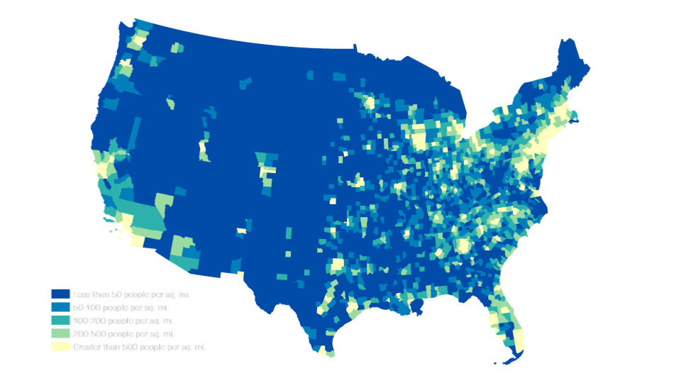
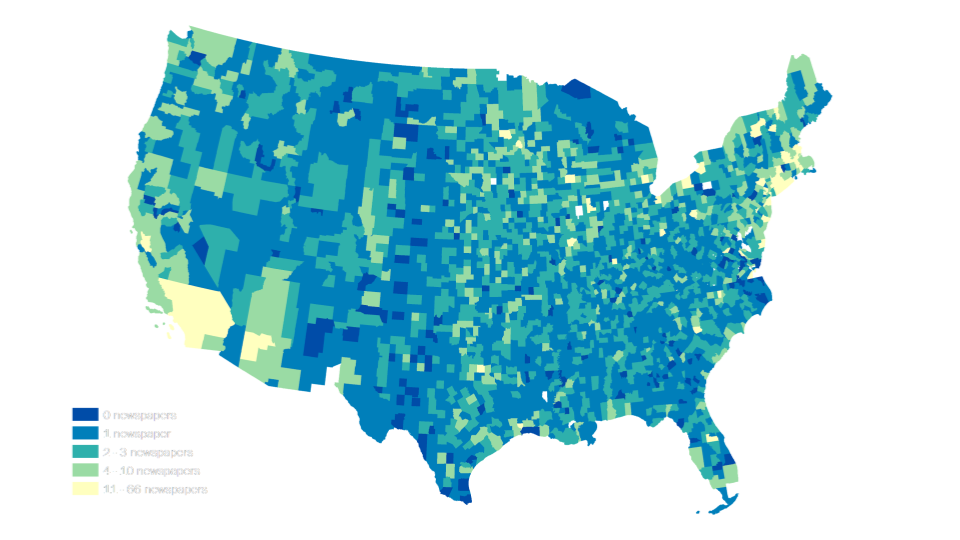
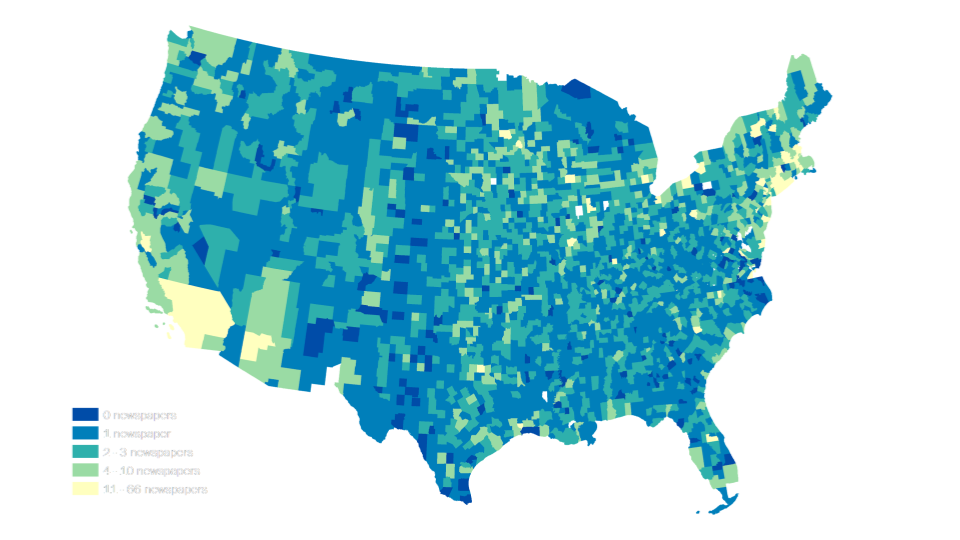

PALIMPSEST
Community Building Through Knowledge Distribution
Summary
WHY?
In order to connect residents together, create relationships within the town community.
WHO?
NEWS DESERTS
News deserts are communities with limited access to credible and comprehensive news
— are especially prevalent in rural America. More than 500 of the 1,800 newspapers that
have closed or merged since 2004 were in rural communities.
In a report released earlier this year, the Pew Research Center found that about half of
U.S. adults (47%) say the local news they get mostly covers an area other than
where they live.
— are especially prevalent in rural America. More than 500 of the 1,800 newspapers that
have closed or merged since 2004 were in rural communities.
In a report released earlier this year, the Pew Research Center found that about half of
U.S. adults (47%) say the local news they get mostly covers an area other than
where they live.


 

WHAT?
Our project aims to be accessible to the public, serve a greater purpose. It is using technology to advance the public interest.